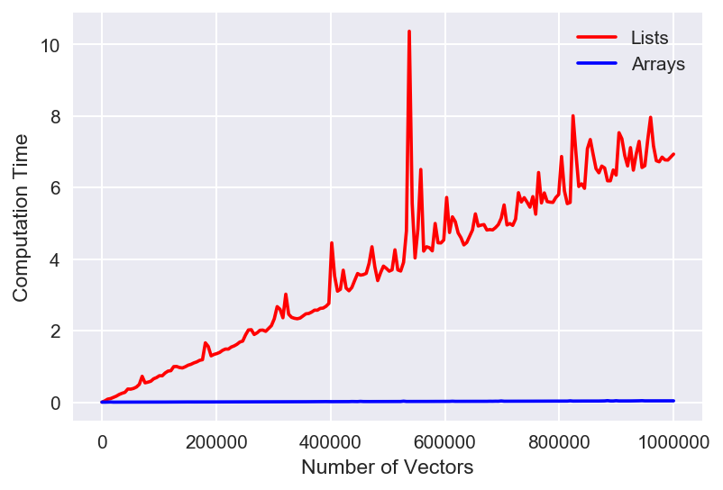
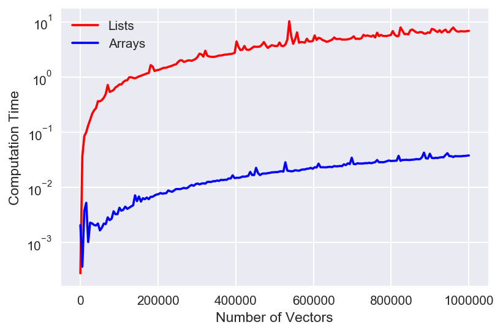

Why numpy is So Great
July 5, 2018 - Python
I've not been subtle about my love for
numpy. I dedicated an entire blog post to how cool they are while talking about Python Data Structures. However, I'd like to once again shout my love for numpy into the ether. Today's topic, vectorization of operations.Setting up the Experiment
To frame this discussion, let's look at a single task: trying to calculate the distance between one vector and a bunch of other vectors in a two dimensional space. This sounds a bit silly, but it's a common machine learning task so it's actually a pretty decent benchmark. Let's start by generating some data, specifically one new vector and an array full of 100 vectors to compare to.import numpy as np
new_vec = np.array([1,2])
all_vecs = np.random.uniform(size=(100,2))x = all_vecs[0]
np.sqrt((new_vec[0] - x[0])**2 + (new_vec[1] - x[1])**2)new_vec and the first of our all_vec comparison vectors. To scale this to all 100 vectors, we'd need to tuck that bit of code into a for loop. Let's take a look at thatoutput = []
for x in all_vecs:
dist = np.sqrt((new_vec[0] - x[0])**2 + (new_vec[1] - x[1])**2)
output.append(dist)all_vecs, we can loop through and calculate the distance. It's not an elegant solution, but it does the job. Now let's see how we'd do the same thing in numpy. To begin with, let's remember that numpy does broadcasting. For example:a = np.array([1,2])
b = np.array([[1,2],[3,4],[5,6]])
print(a + b)
> [[2,4],[4,6],[6,8]]output = np.sqrt(np.sum((all_vecs - new_vec)**2, axis=1))axis=1, which tells numpy to sum along rows instead of columns. That's it though, numpy handles all the operations under-the-hood otherwise. Woo!Testing the Speed
So now that we know how to do this in both methods (regular Python vsnumpy), let's see how fast each method is. In particular, I'm interested in how this scales with data size, so we'll generate larger and larger versions of all_vecs, starting with a few 100 vectors and ending with nearly 1,000,000 vectors. I'm going to use the time module to track how long each operation takes. Here's the code to do this with regular Python.import time
list_timing = []
for num_vecs in np.linspace(10,1000000,200):
all_vecs = np.random.uniform(size=(int(num_vecs),2)).tolist()
# To measure when we start our process
start = time.time()
# The actual process
output = []
for x in all_vecs:
dist = np.sqrt((new_vec[0] - x[0])**2 + (new_vec[1] - x[1])**2)
output.append(dist)
# Figure out when the process was done and
# keep track of how long it took
end = time.time()
list_timing.append((num_vecs, end - start))numpy:array_timing = []
for num_vecs in np.linspace(10,1000000,200):
all_vecs = np.random.uniform(size=(int(num_vecs),2))
# To measure when we start our process
start = time.time()
# The actual process
output = np.sqrt(np.sum((all_vecs - new_vec)**2, axis=1))
# Figure out when the process was done and
# keep track of how long it took
end = time.time()
array_timing.append((num_vecs, end - start))numpy version is called "Arrays" on the graph).

That's just wow. We can see that arrays are WAY faster (lower time is faster) than the list method. Note that some of those spikes are pretty large, but still within expectation of fluctuations due to computer hardware - so the trend overall is more imporatnt. It's hard to see the actual behavior of the array version though, so let's look at the same plot, but with the y-axis set to a logarithmic scale.

numpy is legendary. I love it so much. In this case, you can see that it still scales with the data in roughly the same manner as the Python method, just 2 orders of magnitude faster! That's a beautiful result that further demonstrates just how powerful numpy can be. ------Code for making the plots (comment out the yscale line for linear):
plt.figure(dpi=150)
list_X, list_times = zip(*list_timing)
array_X, array_times = zip(*array_timing)
plt.plot(list_X, list_times, 'r', label="Lists")
plt.plot(array_X, array_times,'b', label='Arrays')
plt.yscale('log')
plt.xlabel("Number of Vectors")
plt.ylabel("Computation Time")
plt.legend();------